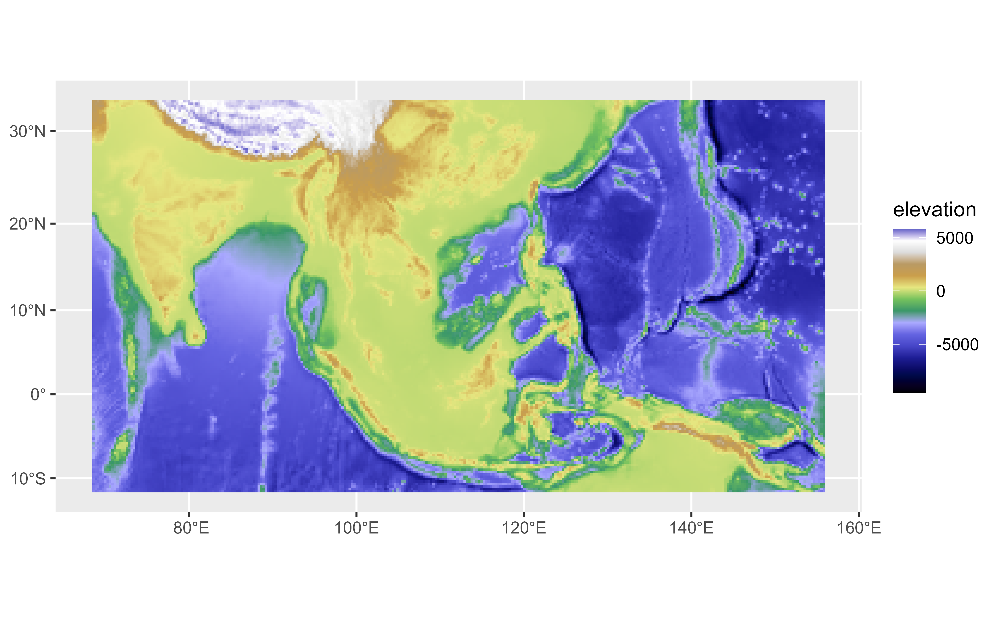
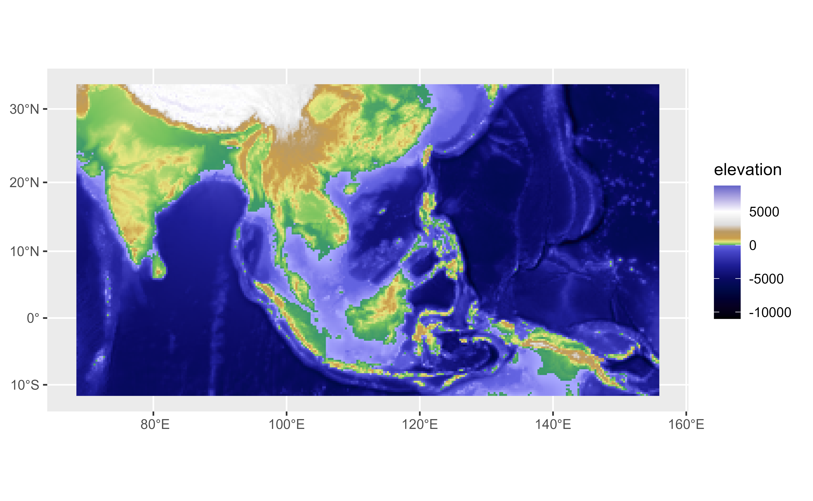

A tibble including the color map of
51 gradient palettes. Some palettes includes
also a definition of colors limits that can be used with
ggplot2::scale_fill_gradientn().
Format
A tibble of 2920 rows and 6 columns. with the following fields:
- pal
Name of the palette.
- limit
(Optional) limit for each color.
- r
Value of the red channel (RGB color mode).
- g
Value of the green channel (RGB color mode).
- b
Value of the blue channel (RGB color mode).
- hex
Hex code of the color.
Source
Derived from https://github.com/OSGeo/grass/tree/main/lib/gis/colors. See also r.color - GRASS GIS Manual.
Details
Summary of palettes provided, description and recommended use:
| palette | use | description | range |
aspect | General | aspect oriented grey colors | |
aspectcolr | General | aspect oriented rainbow colors | 0 to 360 |
bcyr | General | blue through cyan through yellow to red | |
bgyr | General | blue through green through yellow to red | |
blues | General | white to blue | |
byg | General | blue through yellow to green | |
byr | General | blue through yellow to red | |
celsius | General | blue to red for degree Celsius temperature | -80 to 80 |
corine | Land Cover | EU Corine land cover colors | 111 to 995 |
curvature | General | for terrain curvatures | -0.1 to 0.1 |
differences | General | differences oriented colors | |
elevation | Topography | maps relative ranges of raster values to elevation color ramp | |
etopo2 | Topography | colors for ETOPO2 worldwide bathymetry/topography | -11000 to 8850 |
evi | Natural | enhanced vegetative index colors | -1 to 1 |
fahrenheit | Temperature | blue to red for Fahrenheit temperature | -112 to 176 |
forest_cover | Natural | percentage of forest cover | 0 to 1 |
gdd | Natural | accumulated growing degree days | 0 to 6000 |
grass | General | GRASS GIS green (perceptually uniform) | |
greens | General | white to green | |
grey | General | grey scale | |
gyr | General | green through yellow to red | |
haxby | Topography | relative colors for bathymetry or topography | |
inferno | General | perceptually uniform sequential color table inferno | |
kelvin | Temperature | blue to red for temperature in Kelvin scale | 193.15 to 353.15 |
magma | General | perceptually uniform sequential color table magma | |
ndvi | Natural | Normalized Difference Vegetation Index colors | -1 to 1 |
ndwi | Natural | Normalized Difference Water Index colors | -200 to 200 |
nlcd | Land Cover | US National Land Cover Dataset colors | 0 to 95 |
oranges | General | white to orange | |
plasma | General | perceptually uniform sequential color table plasma | |
population | Human | color table covering human population classification breaks | 0 to 1000000 |
population_dens | Human | color table covering human population density classification breaks | 0 to 1000 |
precipitation | Climate | precipitation color table (0..2000mm) | 0 to 7000 |
precipitation_daily | Climate | precipitation color table (0..1000mm) | 0 to 100 |
precipitation_monthly | Climate | precipitation color table (0..1000mm) | 0 to 1000 |
rainbow | General | rainbow color table | |
ramp | General | color ramp | |
reds | General | white to red | |
roygbiv | General | ||
rstcurv | General | terrain curvature (from r.resamp.rst) | -0.1 to 0.1 |
ryb | General | red through yellow to blue | |
ryg | General | red through yellow to green | |
sepia | General | yellowish-brown through to white | |
slope | General | r.slope.aspect-type slope colors for raster values 0-90 | 0 to 90 |
soilmoisture | Natural | soil moisture color table (0.0-1.0) | 0 to 1 |
srtm | Topography | color palette for Shuttle Radar Topography Mission elevation | -11000 to 8850 |
srtm_plus | Topography | color palette for Shuttle Radar Topography Mission elevation (with seafloor colors) | -11000 to 8850 |
terrain | Topography | global elevation color table covering -11000 to +8850m | -11000 to 8850 |
viridis | General | perceptually uniform sequential color table viridis | |
water | Natural | water depth | |
wave | General | color wave |
terra equivalent
References
GRASS Development Team (2024). Geographic Resources Analysis Support System (GRASS) Software, Version 8.3.2. Open Source Geospatial Foundation, USA. https://grass.osgeo.org.
Examples
# \donttest{
data("grass_db")
grass_db
#> # A tibble: 2,920 × 6
#> pal limit r g b hex
#> <chr> <dbl> <dbl> <dbl> <dbl> <chr>
#> 1 aspect NA 0 0 0 #000000
#> 2 aspect NA 255 255 255 #FFFFFF
#> 3 aspect NA 0 0 0 #000000
#> 4 aspectcolr 0 255 255 255 #FFFFFF
#> 5 aspectcolr 1 255 255 0 #FFFF00
#> 6 aspectcolr 90 0 255 0 #00FF00
#> 7 aspectcolr 180 0 255 255 #00FFFF
#> 8 aspectcolr 270 255 0 0 #FF0000
#> 9 aspectcolr 360 255 255 0 #FFFF00
#> 10 bcyr NA 0 0 255 #0000FF
#> # ℹ 2,910 more rows
# Select a palette
srtm_plus <- grass_db |>
filter(pal == "srtm_plus")
f <- system.file("extdata/asia.tif", package = "tidyterra")
r <- terra::rast(f)
library(ggplot2)
p <- ggplot() +
geom_spatraster(data = r) +
labs(fill = "elevation")
p +
scale_fill_gradientn(colors = srtm_plus$hex)

# Use with limits
p +
scale_fill_gradientn(
colors = srtm_plus$hex,
values = scales::rescale(srtm_plus$limit),
limit = range(srtm_plus$limit),
na.value = "lightblue"
)

# }